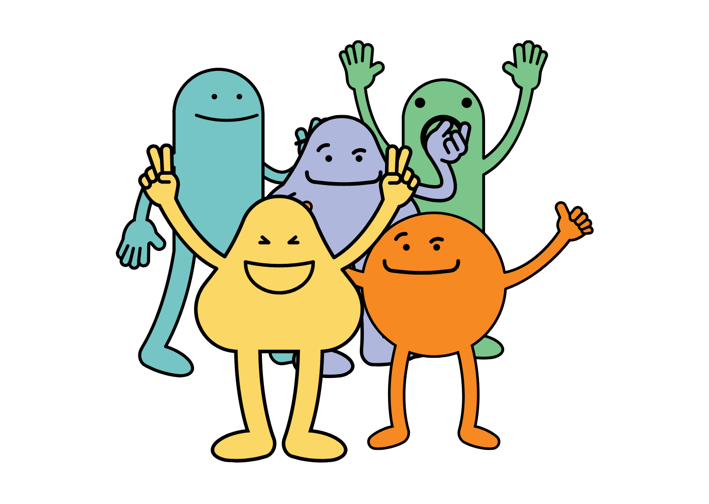
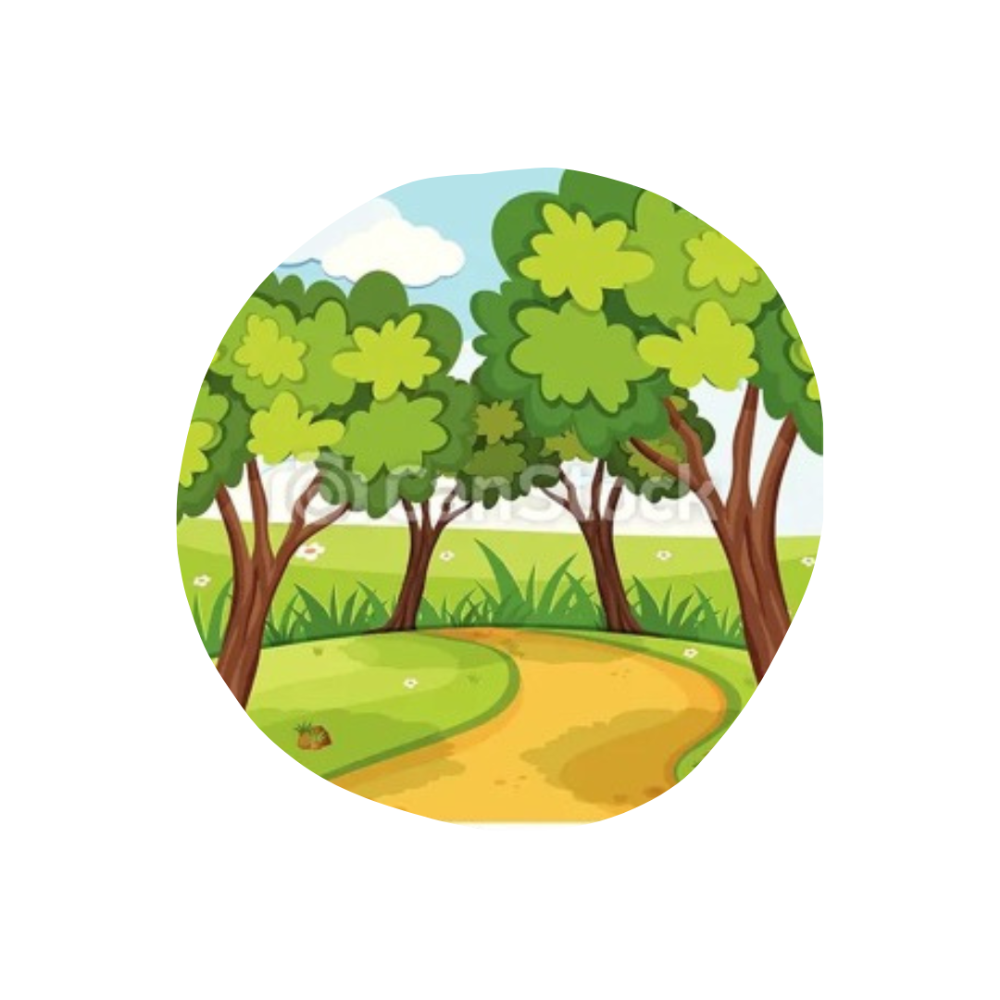
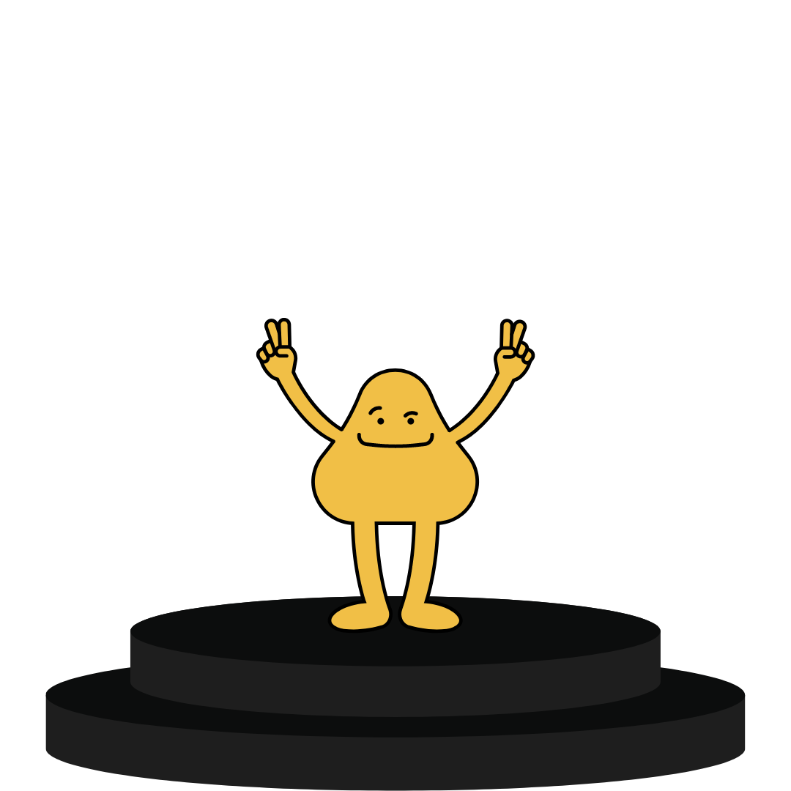
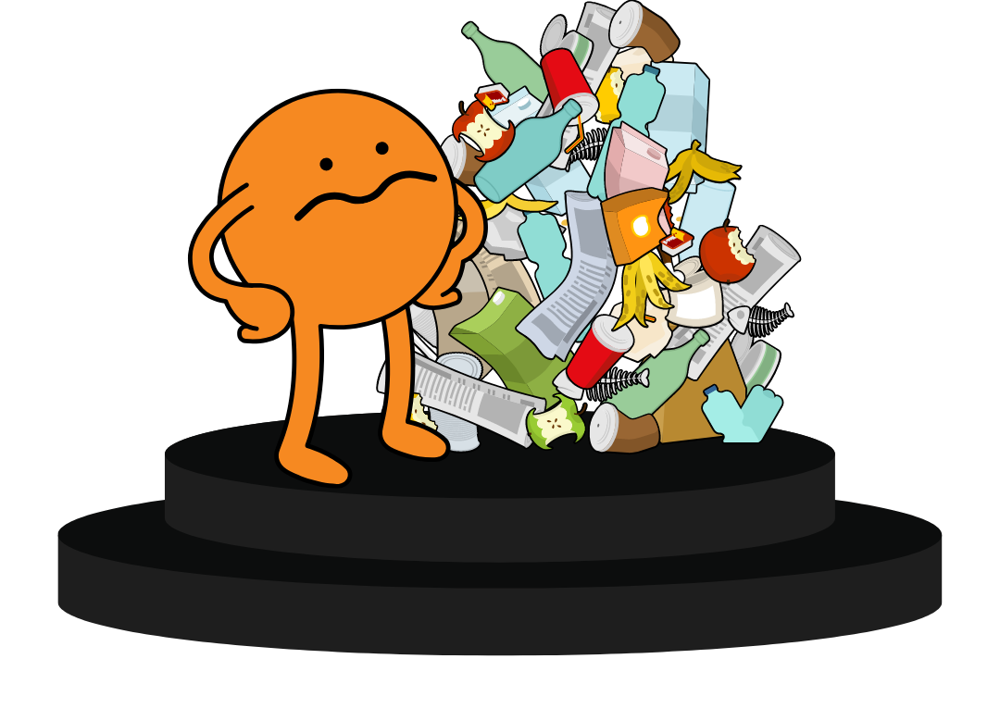
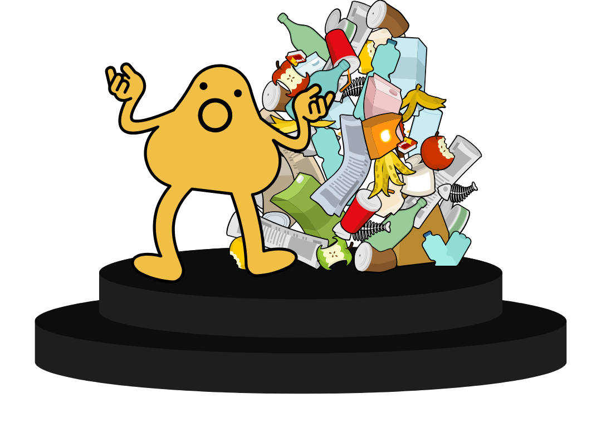
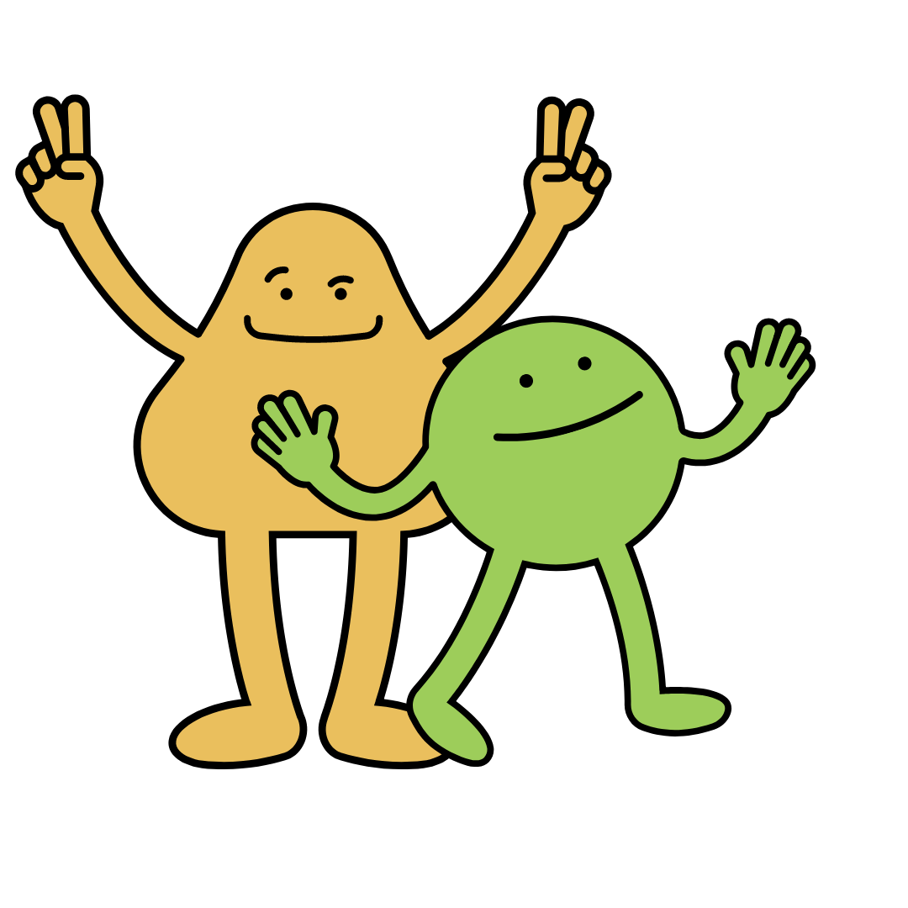

Social interactions are fundamental to the human experience.
From the moment we open our , our social interactions us into who we are.
Magic Mode
In order to better understand this phenomena, the field of
Social Psychology was born.

The Five Hypothesis of Social Psychology
HYPOTHESIS #1
Situations are Powerful.
Situations guide our experiences, despite it often being invisible to us.
Select options from the dropdowns below to see how the various parts of a situation interact.
Your immediate physical and social environment
Your implied physical and social environment
Your internal mental situation


Being outside today was good.
I feel so happy!
Notice how changing one thing affects the feelings that are evoked. How do your immediate, implied, and
mental situations affect the way you experience the world?
HYPOTHESIS #2
We don't know why people do what they do.
We tend to think that a person's behavior is reflective of their disposition and that our behavior is consequent to factors outside of our control.
How we view others
How we view ourselves
"They made a mess because they are such a messy person."

"This week was so crazy for me that I didn't have time to clean!"

HYPOTHESIS #3
We don't know what we don't know.
We are generally are pretty bad at predicting how we will feel about an outcome or
experience.
Well, my partner and I are breaking up.
NOW
FUTURE
We tend to overestimate the impact of an event and underestimate our abilities to cope and adapt to negative ones.
HYPOTHESIS #4
It is amazing that we are as accurate as we are about why people do what they do and
what kind of people they are.
Our experiences help guide us in making snapshot judgements that are pretty accurate.
What feelings do the flashing images portray? How can you tell?
HYPOTHESIS #5
People have two fundamental social motivations:
People want to be liked and have a need to belong.
People want to be accurate, consistent, and authentic.
We have a need to be liked and our presence to be known.

Acknowledgments
Content for this site came from a course taught by Professor Smurda at UCLA in 2021.
This site was created to fulfill my final project for the PUI course at CMU.
Images and other materials
were sourced from Canva.